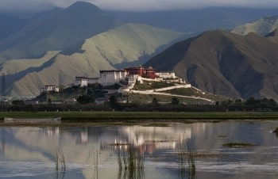
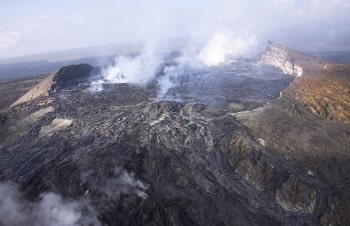
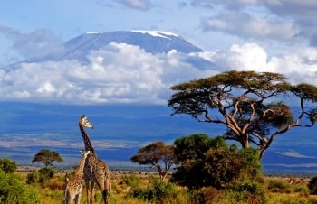

Восхождения
Настоящие экстремальные туры по всей планете
ближайшие туры
раннее бронирование
Восхождение на пик Молодежный (4147 м), Казахстан
Маршрут:
По запросу. Индивидуальный побор тура.
г. Алматы - альп лагерь Туюк Су (2 200 м.) - пик Шымбулак (3 500 м.) - пик Молодежный (4 147 м.) - альп лагерь Туюк Су (2 200 м.) - г. Алматы
Трекинг из Южного в Северное Приэльбрусье
Если Вы, захотите увидеть Эльбрус с непривычной для Вас стороны, мы приглашаем в полукольцевой трекинг вокруг Эльбрус с юга на север по восточной его стороне. Это увлекательное путешествие начинается из Южного Приэльбрусья. В течение двух дней туристы совершают акклиматизационные выходы на пик «Терскол» к обсерватории, мимо водопада «Девичьи косы» и на склоны горы Эльбрус, на высоту 4055 м., к месту бывшего Приюта-11.
Цены и даты уточняйте
«Эльбрус по выходным» - Восхождение на Эльбрус
На акклиматизацию дается всего один день. Подъем от приюта (3900 м) до скал Пастухова (4700 м), откуда в хорошую погоду открывается прекрасный вид на Главный Кавказский хребет, в котором находятся красивейшие горы, такие как Дыхтау, Коштантау, Чатын, Ушба, Шхельда, Донгуз-Орун, Накратау и многие другие красивейшие вершины района.
Цены и даты уточняйте
Восхождение на Эльбрус с Юга
Эльбрус - высочайший горный массив Большого Кавказа. Одновременно он носит гордый титул высшей точки Европы и России. Эльбрус расположен в системе Бокового хребта, полностью на территории нашей страны. Он представляет собой конус потухшего вулкана на высоком цоколе из гранитов и кристаллических сланцев. Эльбрус покрыт шапкой фирна и льда, от которой в стороны спускаются 54 ледника. Наши гиды отлично знают все особенности маршрута, как лучше подготовиться, чтобы восхождение прошло успешно.
Цены и даты уточняйте
Япония: восхождение на Фудзи,
Токио, с его поездами на магнитных подушках и стеклянными небоскребами всегда удивляет уровнем технологий и трудолюбием людей, построивших его. Но еще большее удивление, и даже восторг, вызывает гора, расположенная в 90 км к югу от современной столицы Японии — Фудзи. Эта конической формы гора является слабоактивным вулканом (последний раз он извергался более 300 лет назад). Ее вершина всегда покрыта снегом, а у подножия цветут сакуры и лавандовые поля. Даже раз взглянув на эту гору, понимаешь, почему японцы издавна ее рисовали, используя самые замысловатые художественные техники и материалы. Фудзи всегда разная, поэтому мы будем совершать наше восхождение с ночи, чтобы встретить рассвет, находясь уже высоко на горе, а закат встречать, находясь на вершине (высота 3 776 метров).
Цены и даты уточняйте
Гималаи: восхождение на Шиша—Пангма (8 013 метров)
Гора, которая входит в 15 высочайших вершин планеты. Ее пик, гордо возвышающийся над многочисленными хребтами, покорили самым последним из всех восьмитысячников. Этот отважный шаг предприняла в 1963 году команда китайских альпинистов, что неудивительно, что ведь Шиша—Пангма является единственной горой, которая полностью находится на территории Китая, а не на его границе.
Цены и даты уточняйте
Эверест: пеший поход на пик Кала Патар (5 550 м)
Покорить Эверест — разве это не один из самых суровых вызовов в жизни мужчины? Но что, если вы не питаете страсть к альпинизму и многодневным восхождениям в опасных условиях? В таком случае для вас идеально подойдет пешеходный подъем на одну из самых высоких обзорных площадок Эвереста — пик Кала Патар (5 550 метров над уровнем моря). Находясь на этой вершине можно вдоволь насладиться пейзажем вершины Эвереста, а также соседних гор, таких как Нупцзе, Лхотце, Амадаблам и Пумори.
Цены и даты уточняйте
Пеший поход вокруг Аннапурны
Бескрайние рисовые плантации, залитые водой на склонах холмов, сменяются дождевыми тропическими джунглями, наполненными криками обезьян и ароматом огромных пурпурных рододендронов и нежно—белых магнолий. Затем, еще чуть выше, начинаются лиственные и хвойные леса, покрывающие горные породы, скалы и каньоны, среди который бурлят горные реки, к которым приходят на водопой голубые бараны и снежные барсы. Над ущельями часами парят гималайские орлы, а в долинах мирно пасутся черные яки. Такова природа этого великолепного края…
Цены и даты уточняйте
Треккинг вокруг Кайлаша (5 620 метров)
Кайлаш — одна из святейших гор не только для тибетцев, но и для всех буддистов. Здесь, согласено преданием, сконцентрировано наибольшее количество мест силы и областей, которые являются связующим звеном между богами вселенной и земными жителями. Именно через гору Кайлаш проходит так называемая Ось Вселенной, по которой высшие существа с очень чистой кармой, почти достигшие нирваны, передают силу и знания монахам и ламам. Отсюда же будет передана финальная часть знания, предназначенная для самых мощных лам, которая поможет пережить самые смутные времена последней эры человечества, которая отделяет всех от перехода на новый уровень бытия.
Цены и даты уточняйте
Покорение Эвереста (8 848 метров)
Эверест… Он же Джомолунгма и он же Сагарматха, что в переводе с санскрита означает «Мать всех вершин». Это не просто самая высокая на планете гора. Ее вершина — это вызов. Вызов, брошенный всем, кто не только достаточно амбициозен, чтобы мечтать о покорении этой вершины, но и достаточно силен духом, что претворить свои планы в жизнь. Эта гора покорялась только тем, кто идет к своей цели несмотря ни на что и всегда получает желаемое.
Цены и даты уточняйте
Восхождение на Чо—Ойю (8 201 метр).
Чо—Ойю — одна из 10 самых высоких гор в мире. Тем не менее, восхождение на ее вершину не представляет ни особой опасности, ни существенной сложности. Эта гора хорошо подходит для тех, кто еще ни разу в жизни не совершал восхождения на вершины, высотой более 8 000 метров, но хочет сделать это. Кроме того, этот маршрут подходит в виде тренировки перед восхождением на Эверест.
Цены и даты уточняйте

Гималаи: восхождение на Северное Седло Эвереста (7 000 метров)
Может ли быть задача более амбициозной, чем покорение Эвереста? Это потрясающе, если вы ставите перед собой цели такого масштаба. Однако, если вы недостаточно уверен в своих альпинистских навыках или желаете просто потренироваться перед покорением восьмитысячника, всегда можно отправиться на Северное Седло Эвереста — вершина, достигающая 7 000 метров высоты, по уровню сложности не уступающая самому Эвереста. Все же, восхождение на Северное Седло окажется проще ввиду менее ощутимых атмосферных перемен, связанных с набором высоты, а также благодаря более простым погодным условиям на этой вершине.
Цены и даты уточняйте
Тянь—Шань:
пик Хан—Тенгри (7 010 м)
Серый мрамор неприступных скал и розоватое сияния снежных шапок на закате — пик Хан—Тенгри сразу привлекает внимание своим величественным внешним видом и многочисленными легендами, которые ходят об этой горе среди местного населения.
Цены и даты уточняйте
Вершины Памира: пик Ленина (7 134 м)
Памир — при одном упоминании этого региона, в памяти всплывают пейзажи величественных горных цепей, увенчанных вечными снеговыми шапками и собравших у своего подножия одни из наиболее колоритных стран бывшего СССР и современного СНГ. В Киргизии находится 3 из 5 вершин Памира, превышающих отметку в 7 000 метров над уровнем моря — пик Хан—Тенгри, пик Победы и, конечно, пик Ленина, который нам и предстоит покорить.
Цены и даты уточняйте
Восхождение на Мера Пик (6 476 метра)
Мера Пик — один из постоянно набирающих популярность маршрутов для треккинга. Связано это прежде всего с тем, что на довольно большую высоту (6 476 метров) можно подняться пешком, без использования узко специализированного оборудования или значительного опыта в альпинизме или даже походах.
Цены и даты уточняйте
Покорение горы Манаслу (8 156 метров).
Восьмитысячник… Это слово сразу говорит о классе горной вершины и сложности ее покорения. Но это также говорит о силе духа и статусе того, кто несмотря ни на что привык добиваться своего, идти к своей цели и получать желаемое. Именно такие люди и выбирают для себя только самые сложные и самые высокие вершины на Земле. Одной из таких вершин является Манаслу.
Цены и даты уточняйте
Вершина Монголии — гора Хуйтен
Бескрайние просторы Монгольских равнин, среди которых гордо возвышаются священные для местного народа горные вершины цепи Табын—Боогдо—Ола—Найрамдал. Другое, более привычное русскому человек, название этих гор — Куйтен—Уул.
Цены и даты уточняйте
Загадочная Южная Корея и вершина Халласан (1950 м)
Загадочное сочетание государства, известного на весь мир своими современными технологиями и древних традиций, который по—прежнему придерживается местное население. Высокие горные хребты и равнинные чайные плантации, морозные горные ущелья и теплое море — иногда кажется, что Южная Корея построена на контрастах. И это правда, причем убедиться в этом вы сможете самостоятельно, совершив восхождение на высочайшую точку этой чудесной страны.
Цены и даты уточняйте
Королевство Мустанг
Королевство, расположенное высоко в горах Тибета. Здесь по—прежнему правит король, население, численностью примерно в 10 000 человек, соблюдает древнейшие обряды и традиции, а въезд на территорию королевства был открыт лишь 25 лет назад. Таможенный сбор для желающих своими глазами увидеть, сохранившиеся во всей красе, древние города, превышает 700 долларов США, что резко сокращает число тех, кому все же посчастливилось лично попасть сюда.
Цены и даты уточняйте
Вид на джунгли и океан с высочайшей вершины Юго — Восточной Азии. Восхождение на Кинабалу (4 095 м).
Высокие известняковые горы, неожиданно и гордо вырастающие из земли, леса, наполненные криками мириад попугаев и птиц самой разнообразной формы и окраски, глаза животных, следящие за нами из каждого куста и с каждого дерева, маленькие пекари, быстро бегающие между деревьями, карликовые слоны, шуршащие в зарослях и пьющие воду у водопадов, хищные растения—мухоловки, питающиеся насекомыми, самые большие в мире цветы — Раффлезии, растущие у наших ног и привлекающие насекомых своим странным ароматов и кроваво—красным цветом, высокого в деревьях стаи обезьян, кричащих на все лады и быстро перелетающих с ветки на ветку…
Цены и даты уточняйте
Восхождение на Айланд Пик (6 130 метров).
Айланд Пик (он же известен как Имджа Тце (Imja Tse)) предоставляет все, чего хочет душа опытного альпиниста — ледники и ущелья, горы и долины, плато и отвесные скалы. Здесь хорошо чувствуют себя те, кто умеет ходить в кошках, хорошо управляется с жумаром, веревкой и восьмеркой.
Цены и даты уточняйте
Восхождение на пик Пирамида Карстенз (Пунчак Джайя)
Покорение пирамиды Карстенс — это, пожалуй, в техническом смысле самый сложный путь из всех, которые мы предлагаем нашим клиентам. Конечно, особых проблем это не создает, но заставляет хорошенько поработать. Благодаря мягкому климату эти места, как ни парадоксально, немного похожи на Крым. Горные породы также похожи на Крым — известняковые породы, ракушечные отложения. Кроме того, мы совершаем восхождение по северной стороне острова, а она более приятна и удобна, чем южная, благодаря своим монолитным твердым породам.
Цены и даты уточняйте

Восхождение на Мауна Лоа (4 170 м) и Мауна Кеа (4 202 м)
Бурлящие лавовые потоки, покорение вершин островов, затерянных на просторах Тихого Океана, дайвинг с гигантскими скатами манта, вертолетные экскурсии над кратерами активных вулканов, марсианские пейзажи на Земле, прогулки по Лос Анжелесу и залитые солнцем гавайские пляжи — можно ли сочетать все это в одной поездке?
Цены и даты уточняйте
Восхождение на Арарат (5131м.)
«И остановился ковчег Ноя на горе Арарат…» — именно эта легенда из Библии и притягивает внимание туристов со всего мира к этой горе. Восхождение на ее вершину относительно несложное (по классификации альпинистов, категория 1Б). Весь маршрут занимает 4 дня, которые мы проведем в кемпингах, развернутых на склонах горы.
Цены и даты уточняйте
Бутан. Треккинг "Тропою Дракона"
Мы приглашаем вас в Бутан! Где это? О, это закрытая и труднодоступная для туристов страна, куда очень сложно и опасно ехать самостоятельно, без сопровождения опытного гида. Практически вся территория Бутана – это горы, иногда совершенно дикие и неприступные.
Цены и даты уточняйте

Восхождение на Эльбрус (5642 м), 8 дней. Тур, путешествие на Кавказ
Если вы устали от городской скуки и тяжелого воздуха, отправляйтесь вместе с нами за новыми впечатлениями и адреналином на Эльбрус!
Цены и даты уточняйте
Восхождение на Фансипан (3143 м)
Экскурсии по основным достопримечательностям в сочетании с покорением горы Фансипан, которая возвышается над уровнем моря на 3143м, подарят вам незабываемые впечатления и весомо пополнят ваши фотоальбомы.
Цены и даты уточняйте

БЛИЦ на Маунт Кения
Хотите совершить увлекательное африканское путешествие? Совершите восхождение на Гору Кению. Вторая по высоте гора на территории Африки откроет перед вами потрясающие виды, а путешествие оставит незабываемый след в вашей памяти.
Цены и даты уточняйте

Восхождение на Килиманджаро по МАЧАМЕ
Если вы устали от серых будней и искренне желаете новых впечатлений - совершите подъем на Килиманджаро по маршруту Мачаме!
Цены и даты уточняйте
Восхождение на Килиманджаро по МАРАНГУ (с местными гидами)
Только представьте себе восторженные взгляды ваших друзей и знакомых, когда вы будете делиться впечатлениями и показывать шокирующие сознание домоседов снимки, привезенные из путешествия по экзотической Танзании!
Цены и даты уточняйте
БЛИЦ на Тубкаль (4167 м), Марокко
Любителям африканской, да и не только, экзотики непременно придется по нраву возможность посетить Марокко и взглянуть на него с высоты 4165м. Не стоит пугаться цифр, несмотря на то, что гора Джебель Тубкаль является высочайшей точкой ландшафта Северной Африки, это восхождение будет по силам даже новичку.
Цены и даты уточняйте